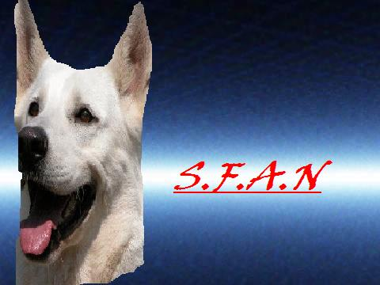

Forums galactiques > Assemblée Galactique : diplomatie officielle > Candidature Ambassade
Pages : 1 2
| Aristippe Respect diplomatique : 906 25/02 ETU 09:42 | Score : 5 Détails Commandants d'Espérance,
présentez vous ici, ainsi que votre programme, et précisez si vous postulez seul ou accompagnés par des camarades pour gérer Ambassade Bonne chance à Tous. Pour Espérance. Aristippe de Cyrène PS Les candidatures sont à poster ici, vous avez 3 jours pour poster vos professions de foi suite à quoi la fermeture des candidatures sera faite et nous passerons à la phase d'élection. | ||
| Albert Simon Respect diplomatique : 1777 25/02 ETU 10:19  | Score : 0 Détails Cher ami,
N'importe qui peut se presenter, c'est bien ça ? Ce n'est pas une question tordue, c'est pour que ce point soit clair pour tout le monde. Merci de votre attention | ||
| Aristippe Respect diplomatique : 906 25/02 ETU 10:26 | Score : 0 Détails Oui oui, tout le monde.
| ||
| Yul Harkonnen Respect diplomatique : 499  25/02 ETU 10:33 | Score : 16 Détails Commandants d'Espérance,
Comme vous le savez tous sûrement, j'ai toujours oeuvré pour la sauvegarde de l'équité entre les commandants. Condamnation de l'arbitraire. Condamnation de l'injustice. Aide aux plus démunis. Voilà les trois points majeurs de ce que je fais au quotidien. Je me présente donc pour la gestion d'Ambassade. Et puisqu'il faut préciser si je me présente seul ou bien avec d'autres commandants, je vais vous avouer que la détention de l'organe administratif, seul, pose de nombreux problèmes. Convoitise, jalousie... Et même tentatives de corruption ! C'est pourquoi, dans la ligné de ce que j'ai toujours fait, ou du moins tenté étant donné les réticences multiples des "grands", je me présente en co-gestion avec l'ensemble des commandants d'Espérance. Désignez-moi et vous pourrez TOUS vous exprimer. Vous pourrez TOUS être écoutés. Vous serrez TOUS entendus et pris en compte. Parce que l'avenir ne peut se faire sans l'ensemble d'Espérance unie... Choisissez-moi ! Choisissez-vous ! | ||
| Général Turon Respect diplomatique : 81 25/02 ETU 11:36 | Score : 5 Détails Pour mon retour(si vous avez remarqué mon absence) moi Général Turon, je présente ma candidature.
-Et si je suis élu, la loi sera basé sur l'ordre, la sécurité, le respect et la protection de tous commandants honnête. Choisissez moi, et vous choisirez un avenir meilleur pour vous. | ||
| seigneur morf Respect diplomatique : 123 25/02 ETU 11:47 | Score : 6 Détails Chère commandant,
C’est aujourd’hui que je vous parle dans la salle pour ce présenter à l’ambassade Je pense que vous savez que je suis pour une République libre et égaux envers tous ces citoyens qui soit jeune ou expérimenté. Je suis un commandant qui je pense participe le plus souvent possible à l’assemblé galactique, et j’essaye de m’intéresser le plus possible ou difficulté politique de notre galaxie. J’écoute activement en direct ou en différé les conversation qui se passe dans cette salle et connais les différent problème que chaque commandant à dans cette galaxie qui est Espérance. Donc oui au nom de mon peuple je me présente après avoir eu une grande réflexion avec les membres de mon gouvernement. Je vous remercie. | ||
| Mystèrax Respect diplomatique : 1216  25/02 ETU 11:52 | Score : 14 Détails Sophie entra dans la salle des candidatures. Elle portait un sari parme, avec de nombreux bracelets en or massif sur ses bras. Elle s'avança jusqu'à l'estrade, de laquelle Vladimir était descendu peu de temps auparavant. Elle approcha le micro de sa bouche, et prit la parole :
"Chers commandants et commandantes, vous qui venez à l'Assemblée, vous qui prenez le temps de vous exprimer et d'écouter, j'ai quelque chose à vous dire! Moi, Sophie, représentante et dirgeante de l'Empire Mystèrien, me présente au poste de "Gouverneur" d'Espérance. Je n'ai pas la prétention de vous unir TOUS, l'union totale étant aussi Utopique que la disparition de tous les boulets qui ruinent notre belle Gaalxie, notre chère Espérance. En revanche, je souhaites que nous travaillons main dans la main, pour faire avancer notre Galaxie tant aimée! Espérance a ses points forts, mais aussi ses points faibles, qu'il faudra combattre, par la parole si posible, een croisant le fer si nécessaire! Aussi, je vous proposes un Pacte, en trois points, que je ferais appliquer suis je suis élue, pour combatre la dérépitude et la décadence d'Espérance! Il peut se résumer aux termes suivant : Liberté, Sécurité et Ordre! Primo, un gouvernement à l'écoute, à votre écoute! Un gouvernement qui prendra en compte vos remarques, vos demandes, pour avancer plus vite vers le futur! Une République où vous serez libres, libres et écoutés! Secondo, un pouvoir central fort, réagissant rapidement, apte à prendre des décisions sans tergiverser, qui n'attend pas que l'attaque soit passée pour réagir! Un gouvernement qui ne fait pas dans la demi-mesure, et qui se donnera les moyens de ses ambitions, pour votre Sécurité! Terzio, une armée puissante, pour répondre à toute attaque envers un membre de la République ou envers la République, par une (des) personne(s) qui y est (sont) affiliée(s) ou non! Une armée gouvernementale, qui pourra être soutenue à la demande du Gouverneur par des flottes alliées, pour une plus grande efficacité! L'Ordre sera ainsi respécté! Je vous proposes d'établir une nouvelle Galaxie, une Galaxie Forte, une Galaxie Sécurisée, une Galaxie de Libertés!! Chacun y trouvera sa place, du plus petit, et néanmoins très important commandant, au plus grand!" Sophie descendit de l'estrade, s'écartant en voyant arriver Essai, et partit à l'astro-port pour mettre sur pied son équipe de campagne à Bord du Totemis. | ||
| Essai Respect diplomatique : 389  25/02 ETU 11:57 | Score : 10 Détails A tous les commandants d'Espérance, moi le Général Essai Nucléaire je présente ma candidature !
Chers amis, Je suis bien évidemment très fier et particulièrement ému d'avoir à vous présenter ma candidature. Fierté d'avoir un jour à succéder à ces anciens dirigeant d’Espérance – certains jusqu'à ce jour - nous ont honorés de leur compagnie, qu'il s'agisse de l’Empire Cronosite, Eragon Ohen, Cesco Imperator ou Aristippe. Emotion donc de me retrouver face à vous... En réfléchissant aux arguments qui pourraient vous déterminer à me couvrir massivement de vos suffrages, en me remémorant ce parcours incroyable qui devait me conduire un jour à la sauvegarde de mon peuple, je me suis aperçu que ma candidature était en fait accidentelle, au sens où elle n'était pas prévisible. Cette candidature n'aurait pas été possible sans la bénédiction de ma femme Joséphine, de mes filles Hermione et Bérénice, de ma maîtresse… Alicia. Enfin concernant mon programme, sachez qu’avec moi les choses iront mieux car je garantirai personnellement le bien être de chaque personne dans cette Galaxie. Il n’y aura plus personne dans le besoin ni dans la détresse. Votez pour moi :) | ||
| Felmo Respect diplomatique : 1  25/02 ETU 12:13 | Score : 1 Détails Moi Felmo commandant désordonné a l'honneur de déposé sa candidature.
Je sais que parfois je suis un peu c** et pénible mais si je suis a la tête d'Espérance je serais me calmé et être a l'écoute des autres joueurs forts, faibles, toutes catégories confondus. Pour moi être a l'Ambassade s'est beaucoup de chose. Alors si je suis Ambassadeur je promets d'être discipliné. Mais aussi donné de l'aide au plus démunit, en fessant un groupe de personne riche ou forte et de passer des ressources ou vaisseaux voir planètes. Et bien d'autre chose encore. Voter Felmo. Merci a tous et a toutes. | ||
| revan Respect diplomatique : 1671  25/02 ETU 12:52 | Score : 16 Détails Revan prit la parole
Mes chers commandants ! Moi…Revan J’ai décidé de me proposer pour la détention d’Ambassade En effet, depuis énormément de temps les troupes droides se battent pour la sécurité et le bien être d’espérance…même si celle-ci ne montre pas vraiment de reconnaissance à cela… J’ai divers projets en tête, je vais simplement exposer les plus importants: -Mise en place de la « Fondation d ‘Espérance ». Cette fondation sera aménagé par moi-même et une personne que j’aurais jugé apte à cela J’offrirais une somme généreuse pour lancer la Fondation et tacherais qu’aucun impôt ne soit nécessaire pour son bon fonctionnement. Elle aura pour but d'aider au developpement des jeunes commandants et egalement d'aider d'en aider d'autres qui auraient besoin d'argent ( prés pour les vieux, don pour les jeunes ) -Mise en place de le sécurité du territoire: Ceci aura pour but de créer une petite armée d’espérance, contrôlé par le gouvernement. Cette armée aura pour but de garantir la sécurité des commandants d’espérance et sera la tête de pont en cas d’invasion ennemi. -Mise en place du centre de la Police d’espérance: Ce pouvoir judiciaire sera dirigé par 2 commandants, ils auront pour but d’écouter les problèmes des commandants et de régler les litiges. Si besoin est, ils pourront demander à l’armée d’espérance d’agir. Le soutient et l’entraide sera privilégié à toute autre forme de soutient… Ayez confiance en un pouvoir qui à toujours tout fait pour Esperance. | ||
| Naruse Respect diplomatique : 1178  25/02 ETU 18:32 | Score : 10 Détails Une vieille femme pénétra d'un pas léger et sûr dans l'hémicycle. Bien que son âge soit avancé, elle conservait une certaine attirance, et une élégance gracieuse. Certains la reconnurent immédiatement... d'autres non.
Il s'agissait de Atora Librash, facilement "identifiable" par son tatouage qui brillait d'une lumière presque aveuglante. Mesdames, Messieurs, je suis Atora Librash, envoyée par le Conseil des Patriotes. Il y a quelques temps déjà, j'ai proposé un système pouvant gérer au mieux cette galaxie. Proposition apparemment ignorée ; comme toutes les autres d'ailleurs. Notre candidature n'a pas été accepté par l'unanimité du Conseil. Notamment en ce qui concerne le Commandeur Ein Naruse, qui est fortement opposé à impliquer le Teikoku dans ces "magouilles" (d'après ses propres mots). Il s'est d'ailleurs retiré pendant quelques temps. Il n'interviendra donc plus auprès de vous. Bref... il ne s'agit que d'un détail. Passons donc, sans perdre un instant à la raison qui m'amène. Comme vous l'aurez compris, l'Empire Mayar se propose à la "gérance" de la galaxie. "Gérance" tout à fait relative d'ailleurs. Je reprends donc la proposition que j'avais formulée, avec de légères modifications) : Le Gouverneur nommera des délégués, appelés Recteurs. Ils seront au nombre de trois. Le Gouverneur décidera lui-même des tâches qu'ils devront accomplir. (défense du 0, pouvoir judiciaire, etc, etc...) Ensuite le pouvoir législatif sera assurer par trois membres élu par l'Assemblée, qui se réuniront en conseil (Conseil du Peuple si vous le désirez) pour discuter des actions entreprises par le pouvoir exécutif. Concernant ces actions le 'peuple' pourra bien entendu donner son avis, qui sera recueilli par les Conseillers, mais il ne sera (l'avis) que consultatif. Le 'peuple' ayant nommé ses représentants, il est normal qu'il lui fasse confiance. Sinon à quoi servent-ils s'ils doivent constamment demander l'avis des autres ? En ce qui concerne la destitution du Gouverneur ou des Conseillers, elle sera possible après déposition de motion de censure soutenue par au moins 3/4 des votants. Les Recteurs pouvant être 'virés' à tout moment par le Gouverneur. Maintenant le pouvoir judiciaire. Il sera effectué par l'un des Recteurs. Il organisera lui même les instances qu'il juge nécessaire à la bonne opération de ce pouvoir. Comment sera-t-il financé ? Ca c'est le problème du Gouverneur. L'idée des Cdts volontaires, proposé par Wyatt, peut bien evidemment être reprise mais ils assureront leurs missions avec leur propre moyen. Sauf si le Gouverneur possède les capitaux nécessaires pour les fournir. Du côté des lois, il n'y en aura aucune. Nous misons sur la responsabilité individuelle de chacun. S'il se trouve qu'un Cdt s'écarte de cette responsabilité, le Recteur chargé du pouvoir judiciaire se fera un plaisir de s'en charger. Chacun est libre d'appartenir à ce système. Par défaut tous les Cdts y sont rattachés. Ces derniers devront faire une annonce direct à l'AG pour notifier leur non-appartenance à ce système. Messieurs, merci. | ||
| Boulix Respect diplomatique : 56  25/02 ETU 19:06 | Score : 12 Détails Je me présente donc ma candidature aux élections .
Je n'ai pas envie de vous faire un long discours pour dire des conneries donc voila ... Mon projet est simple ,je compte rien foutre pour vous et vous laissez un pouvoir total . Voici un projet simple et clair . Ouaf,votez pour moi. | ||
| Ansem Respect diplomatique : 139 25/02 ETU 22:17 | Score : 5 Détails Cette galaxie manque de droiture et de dogme.
Comment peut-on oser ne pas implorer l'Ordre des Chemins de l'Aube de prendre la capitale ? Bientôt, mes amis, vous serez tous en train de prier et de louer la grandeur de notre prophète bien aimé ! Bientôt, vous mangerez tous du jambon (le jambon de dinde est autorisé pour les personnes ne mangeant pas de porc, évidemment) ! Non ! je ne suis pas fou ! Arrêtez de vouloir me mettre cette camisole de force ! Ma candidature est dans l'unique but de rammenner Espérance dans le chemin de la Vérité, la seule , celle qui permet de comprendre où nous sommes et qui nous sommes. A bientôt aux urnes ! | ||
| Passage Respect diplomatique : 125 25/02 ETU 23:30 | Score : 3 Détails La très Grande Magistrature de l'Equilibrium se présente.
La très grande Magistrature a pour but l'abolition totale des émotions guerrières et violentes. La colère ne sera plus. La méchanceté ne sera plus. Nous serons tous égaux devant Dieu. L'Equilibrium sera vôtre. Ainsi, la paix sera préservée. Puisse votre choix être éclairé. | ||
| tigroo Respect diplomatique : 105 26/02 ETU 11:37 | Score : 6 Détails Ator!
Je me présente comme candidat. Mon programme tiens en 3 points: 1-Création d'une taverne garantissant le demi de cervoise à moins de 2 £. 2-Création dans une deuxième tranche de la voie galactique menant à cette taverne. 3-Création de radars de vitesse galactique sur la route menant à cette taverne, officiellement pour surveiller les navires stellaires de marchandises alcoolisées (les marchandises, pas les navires...) (officieusement pour gagner autant de £ qu'avec la taverne). 4-(pour un programme en 3 points vous avourez que c'est généreux) Mise au point des programmes et des amendements (rien à voir avec la polices, les amendements...) au comptoir prônant la démocratie apéritative. Celui criant le plus fort (ou ayant le plus de CLI sur le parking) décidera du texte final. Si ce programme ne suffit pas à vous convaincre, faites un petit effort et pensez à la tournée du patron que j'offre si je suis élu... | ||
| Denior Respect diplomatique : 3266 26/02 ETU 16:39 | Score : 3 Détails Si les institutions "choisies" par quelqu'uns avaient une moindre chance de concourir à la prospérité des habitants d'Espérance
Si ce même nouveau régime pouvait contribuer à la Paix Si l'intérêt de ces dirigeants intègres pour leur Devoir de Politique le justifiait Si ce débat et les propositions inhérentes était d'un niveau qui soit digne des enjeux Alors il faudrait s'engager Mais qu'avons nous ? Une absence totale de prise en compte de l'intérêt général Un angélisme béat comme idéal politique L'égoïsme sacralisé La bétise érigée comme programme politique. Aussi pour cette raison, je ne participerai à ce scrutin ni en temps qu'électeur, ni comme candidat. Je pousserais même la logique en refusant ce nouvel état. Désormais les possessions euphoriennes se constituent en État autonome, neutre vis à vis de ce nouvel état. Je forme le voeu que votre débat présidentiel prenne une tournure plus digne et vous souhaite plein succès. Cordialement | ||
| Boulix Respect diplomatique : 56 01/03 ETU 17:33 | Score : 0 Détails Cher Aristippe à quand les élections ?
Cette demande de candidature était elle sérieuse ou avait vous pris pour des imbéciles les commandants de cette galaxie ? Nous nous sommes présentaient ,nous voulons des élections maintenant ou je sens que certains iront se servirent eux même . ON VEUT DES ELECTIONS !!!! ON VEUT DES ELECTIONS !!!! ON VEUT DES ELECTIONS !!!! ON VEUT DES ELECTIONS !!!! ... OUaf ouaf ouaf ... | ||
| Rosa L. Respect diplomatique : 1595 01/03 ETU 17:49 | Score : 7 Détails Rosa s’approcha, la mine triste et déconfite.
Candidates, Candidats, Je suis au regret de vous informer qu’Aristippe est dans l’impossibilité d’organiser les élections. Ceci n’est que temporaire. Non, Non, ne criez pas au scandale ! Il sait parfaitement ce qu’il doit faire, il n’a rien oublié. Cependant, un événement majeur s’est déroulé au sein de la confédération Démocratique. Toutes communications semblent vaines, mêmes les miennes. Je n’ai aucune nouvelle. Toutefois, Emilio est parvenu à capter une conversation par un système méconnu et il semblerait que la situation se décante rapidement. Continuez les débats, continuez les échanges, continuez à vous investir. Les élections auront bien lieu mais en retard. Rosa avait eu le courage de révéler la vérité. Les larmes coulaient sur ses joues. HRP : y a souci de connexion. Rien de grave. | ||
| seigneur morf Respect diplomatique : 123 02/03 ETU 11:50 | Score : 0 Détails Bonjour,
juste une question quand commence les votes? merci | ||
| Boulix Respect diplomatique : 56 02/03 ETU 12:38 | Score : 0 Détails Des chiens arrivérent en hurlant...
On veut des votes !!!! OUAF OUAF OUAF !!! |
Pages : 1 2
Forums galactiques > Assemblée Galactique : diplomatie officielle > Candidature Ambassade